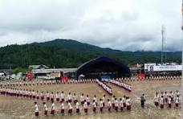

About Arunachal Pradesh
Arunachal Pradesh, located in the northeastern part of India, is known for its pristine beauty and diverse culture. It is home to numerous tribes, each with its unique traditions and customs. The state is blessed with lush green forests, majestic mountains, and serene rivers, making it a paradise for nature lovers.
Festivals and Traditions of Arunachal Pradesh
- Losar
- Celebrated by the Monpa tribe
- Marks the Tibetan New Year
- Includes rituals, cultural performances, and feasts
- Typically observed in February or March
-
Dree Festival
- Celebrated by the Apatani tribe
- Agricultural festival to pray for a good harvest
- Includes sacrificial offerings, traditional dances, and community feasts
- Observed in July
- 
- Solung Festival
- Celebrated by the Adi tribe
- Agricultural festival to ensure a bountiful harvest and prosperity
- Features rituals, folk dances, and communal meals
- Celebrated in September
- Si-Donyi Festival
- Celebrated by the Tagin tribe
- Honoring the earth and the sun gods for prosperity and well-being
- Involves rituals, dances, and feasting
- Held in January

- Mopin Festival
- Celebrated by the Galo tribe
- Agricultural festival to bring in wealth and prosperity
- Features the traditional Popir dance, sacrificial rituals, and local rice wine
- Celebrated in April

- Nyokum Festival
- Celebrated by the Nyishi tribe
- Festival of harmony and prosperity
- Involves rituals, prayers, and traditional dances
- Observed in February
- Reh Festival
- Celebrated by the Idu Mishmi tribe
- Aimed at ensuring the welfare of the tribe and their livestock
- Includes elaborate rituals, dances, and feasting
- Celebrated in February
- Loku Festival
- Celebrated by the Nocte tribe
- Harvest festival marking the end of the agricultural cycle
- Features traditional dances, feasting, and community bonding
- Observed in November
- Pongtu Festival
- Celebrated by the Tutsa tribe
- Festival for good harvest and protection from natural calamities
- Involves rituals, dances, and feasts
- Held in April
- Chalo Loku
- Celebrated by the Nocte tribe
- Thanksgiving festival marking the end of the harvest season
- Includes traditional dances, songs, and feasts
- Celebrated in October